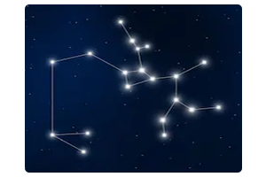

ANDROMEDA TAKIMYILDIZI
(Zincirli Prenses)
|
Andromeda Takım Yıldızı, kuzey gök küresinde yer alan ve nispeten çok fazla belirgin olmayan bir sonbahar takımyıldızıdır.
Buna rağmen hem mitolojik hikayesi hem de içerisinde barındırdığı çok tanıdık komşu gökada sebebi ile gayet iyi bilinir ve takip edilir.
Andromeda takımyıldızı, Işık kirliliğinin çok yoğun olduğu şehirlerde bile bariz bir şekilde görülebilen W şeklindeki Kraliçe (Koltuk) Takımyıldızının hemen aşağısında yer alır.
Bu takımyıldız, Zincirli Prenses adı ile de bilinir. Andromeda Takımyıldızını ünlü yapan asıl sebep, pek tabiidir ki; içerisinde yer alan ve kendisi ile aynı isme sahip olan Andromeda (M31) Gökadasıdır.
Andromeda Gökadası, gökyüzünde çıplak gözle görülebilen en uzak cisim olma özelliği taşımaktadır.
Boyut olarak Samanyolu gökadasından biraz daha büyük olan bu gökada, bizden yaklaşık 2,5 Milyon Işık Yılı uzaklıktadır.
Takımyıldızın en parlak 4 yıldızı, V harfinin güneyinde yer alan kol boyunca sıralanmıştır. Bunlar, yukarıdan aşağıya doğru Elmak, Miraç, Delta Andromeda ve Alpheratz’dır.
Alpheratz, aynı zamanda Andromeda’nın en parlak yıldızı olmasının yanında güney batısında yer alan Kanatlı At (Pegasus) takımyıldızının da en parlak dördüncü yıldızıdır.
Astrolojideki 14 derece koç burcu derecesinde Alpheratz sabit yıldızı bulunur. Alpheratz Andromeda dediğimiz bölgeyi temsil eder. Jüpiter Venüs karekterindedir.
|
AQUİLA TAKIMYILDIZI
(Kartal)
|
Aquila (Kartal takımyıldızı), modern 88 takımyıldızdan biridir. Mitolojide Zeus'un Kuşu olarak bilinir. Onun devlerle olan savaşında ona yardım eder ve ona bekçilik yapar.
Takımyıldızın en parlak yıldızı olan Altair, Yaz üçgeni asterizminin başucu noktalarından birisidir. Kartal Takımyıldızı'nın çoğu Samanyolu bandı bölgesindedir. Bu konum nedeniyle, sınırları içinde
birçok küme ve bulutsu bulunur, ancak loşturlar ve gökadalar azdır. Samanyolu gökadamızın kalabalık düzlemini ikiye bölen koyu renkli açıklığın bir bölümü olan Kartal Yarığı, kuzey yarımkürenin
yaz aylarında Uçucu (Altair) ve Yaz Üçgeni'nin yakınlarında gökyüzünde bir kemer meydana getirir. Samanyolu'nun soluk yıldızları üzerinde bir karaltı halinde görünen bu açıklığı oluşturan tozlu
molekül bulutları, büyük bir ihtimalle yüz binlerce yıldız oluşturabilecek hammadde içermektedir. Bunu bilen gökbilimciler de yıldızların doğumunu ele verecek işaretleri yakalamak için hevesle bu
bulutları incelerler. Teleskopla çekilen bu görüntü LDN 673 olarak tanımlanmış olan parçalı bir karanlık bulut yapısına doğru bakmakta olup, fotoğrafın görüş alanı bir dolunaydan biraz daha geniş bir
alanı kapsamaktadır. Manzara içerisinde genç yıldızlarla bağlantılı olduğu görülebilen enerji yüklü akıntı işaretleri arasında sol üst tarafta yer alan kırmızı tonlardaki küçük bulutsu RNO 109 ile görüntü
merkezinin sağ üst tarafında yer alan Herbig-Haro nesnesi HH32 sayılabilir. Kartal Takımyıldızı'ndaki karanlık bulutların uzaklığı yaklaşık 600 ışıkyılı olarak tahmin edilmektedir.
|
LYRA TAKIMYILDIZI
(Çalgı)
 |
Kuzey Yarıküre’de bulunan takımyıldızdır. Gökyüzünde sağaçıklığı 18’10”-19’30” ve dikaçıklığı (25°)-(47°) olan bir alanı kaplar. Küçük bir takımyıldız olmasına karşın,
astronomide çok önemli bir yeri vardır. Bilinen en eski takımyıldızlarından biri olması nedeniyle birçok söylenceye konu olmuştur. Çalgı, müzik aleti liri simgeler.
Çalgı çok önemli ve çoğu belli bir türe örnek gösterilen yıldızları içine alır. En parlak yıldızı Alfa Lyrae, Vega, görünen parlaklığı 0.04 kadir ve tayf türü AO olan bir yaldızdır. Göğün 5. parlak yıldızıdır.
Beta Lyrae ilginç bir örten çift yıldız sistemidir. Bu yıldızın bulunmasından sonra Beta Lyrae yıldızları olarak adlandırılan bir yıldız tipi ortaya çıktı. Bu tip yıldızlar, birbirlerine çok yakındırlar ve ortak
kütle merkezi çevresinde dönerlerken birbirlerini örten çift yıldız sistemleridir. Bu yıldızların biçimleri biraz bozulmuştur ve her ikisi de ortak bir atmosfer tabakasıyla çevrilmişlerdir. Epsilon Lyrae
yıldızı da önemli bir yıldızdır. Çıplak gözle bile biryıldız çift olduğu görülebilir. Bu iki yıldızın her biri de kendi aralarında çifttir. Öteki bir çift yıldız da Zeta Lyrae’dir. Vega, Epsilon ve Zeta yıldızları,
kenar uzunlukları 2° kadar olan bir eşkenarüçgen biçimi oluştururlar. Çalgının kuzeybatı doğrultusunda, Kuğu takımyıldızı sınırına yakın bir yerde, RR Lyrae bulunur. Bu yıldız uzaklık ölçümlerinde
örnek yıldız olarak kullanılır. Aynı zamanda, Sefe türü, kısa dönemli değişen yıldızlar arasında, Samanyolu’nda keşfedilen ilk yıldız olması bakımından da ilginçtir.
|
CYGNUS TAKIMYILDIZI
(Kuğu)
|
Cygnus (Kuğu) Takımyıldızı modern 88 takımyıldızdan biridir. Birçok parlak yıldız içerir. Bu yıldızlardan en önemlisi ve en parlak olanı Deneb'dir ve yaz üçgeninin üç yıldızından biridir. Kuğu
takımyıldızı görünüm bakımından Samanyolu üzerinde güneye doğru uçan bir kuşu andırır. Sistemin alfası bir yaz üçgeni üyesi olan deneb isimli yıldızdır. sistemin alfasının yaz üçgeni üyesi olmasından
da anlaşılacağı üzere kuğu takımyıldızı kuzeysel bir takımyıldızdır ve yaz mevsiminde yaklaşık 42°'lik deklinasyon açısı ile tam tepede görünür. sonbahar ve kış mevsimine doğru ise kuğu takımyıldızı
güneysel başta kendisini göstermeye başlar. Sadr ve Albireo isimli yıldızlara ilave olarak 25 adet daha yıldız, kuğu'nun kuyruğunu oluşturan deneb isimli alfaya arkadaşlık eder. deneb'in dünya'ya
mesafesi ise yaklaşık 2700 ışık yılıdır. Kuğu için yaygın olarak kullanılan bir isim de Kuzeyhaçı’dır. Kuğunun kanatları Samanyolu’nu yıldızlarla dolu bir yerde keser. Bu takımyıldızı 17 ana yıldız içerir ve
en parlak yıldızı olan Denab Güneş’ten 60.000 kat daha parlaktır. Denab koyunun kuyruğunun sonundadır. Yunan mitolojisinde Zeus Spartalı Kraliçe Leda’yı takip etmek için kuğu kılığına girer.
Bir başka efsaneye göre Kuğu Dionysos’a saygısızlık ettiği için gökyüzüne konmuştu.
|
SCORPİON TAKIMYILDIZI
(Akrep)
|
Batısında Terazi, doğusunda Yay takımyıldızları vardır. Güney gökkürede, Samanyolu merkezine yakın, geniş bir takımyıldızdır. Samanyolundaki konumundan ötürü bu takımyıldız bölgesinde M6
(Kelebek kümesi) ve M7 (Batlamyus Kümesi) açık kümeleri ve M4, M80 küresel kümeleri gibi pek çok derin uzay nesnesi bulunmaktadır. Ayrıca Zeta 2 Scorpii yıldızının çok yakınında NGC 6231 açık
yıldız kümesi vardır. Takımyıldızının güney'de olması sebebiyle, Brezilya'dan net gözüktüğü için, yıldızlar genellikle Brezilya'nın eyaletlerini simgeleyen bayrağında yer alır. Brezilya bayrağına
baktığınızda Akrep Takımyıldızını görebilirsiniz. Birçok takımyıldızından farklı olarak, geniş kıskaçlı kafasından parlak Antares tarafından temsil edilen gövdesine ve parlak Shula yıldızı ile sona eren
kıvrımlı kuyruğuna, Akrep adını aldığı hayvana oldukça benzer. Mitolojide Akrep, tanrıça Artemis’e yaptığı saygısızlığın ve boşboğazlığın cezası olarak, yeryüzündeki tüm vahşi hayvanları avlayacağını
ve öldüreceğini söyleyen Avcı’yı öldürmek için gönderilen akrebi tasvir eder. Akrep burcunda doğanların dinamik, becerikli, ihtiraslı ve uyanık oldukları söylenir.
|
SAGİTTARİUS TAKIMYILDIZI
(Yay)
 |
Parlak yıldızlara sahip olan Yay takımyıldızı gökyüzünde farketmesi en kolay burçlardan biridir. En parlak yıldızları ( Delta, Epsilon, Zeta, Phi, Lambda, Gamma-2, Sigma ve Tau Sagittarii) çaydanlığı
andıran bir biçim oluşturuyor. Tabii evvelden çaydanlık olmadığından eski insanlar bu şekilde bir okçu figürü (ya da centaur) görmüşlerdir. Zodyak takımyıldızlarından biri olan Yay takımyıldızı bir
ok (Unicode U+2650) sembolüyle gösterilir. Latince ismi olan Sagittarius okçu demek zaten. Mitolojide, centaurus denilen yarı insan yarı at olan bir yaratık olarak tasfir edilir. Bu mitin kaynağı Babil.
Buradan Yunan kültürüne geçiyor. Hakkında yazılı bilgiye ilk defa Antik Yunan astronomu Batlamyus’un (Ptolemy) 2. yüzyıldaki kayıtlarında rastlıyoruz.Yay içinde pek çok Messier kataloğuna dahil
obje bulunuyor. Burada izleyebileceğiniz bulutsular: Lagün (M8), Omega (M17) ve Trifid (M20). Yıldız kümeleri: Küresel küme olan M22, M28, M54, M55, M69, M70, M75; ve açık kümeler M18, M21,
M23, M25. Samanyolu galaksisinin merkezi Yay’ın batı kısmında yer alır. Gökyüzündeki en yoğun bölgede olduğundan pek çok yıldız kümesi ve bulutsu içerir. Dürbün ile gözlem için gökyüzünün en iyi
bölgesi sayılabilir. Bir Güney yarıküre takımyıldızı olmasına karşın Kuzey’den de görülebilmekte. Yay takımyıldızı Kuzey yarımkürede en iyi Ağustos ayında gözlemlenir.
|
GÜNEY TAKIMYILDIZI
(WOH G64)
|
İkizlerevi’nden sonra yine Büyük Macellan Bulutu’nda ve bu kez 168 bin ışık yılı uzakta bulunan kırmızı üstdev (süper dev) WOH G64’ün çapı ise Güneş’in 1540 katına erişiyor. WOH G64 bilinen en
büyük yıldızlardan biri; ama çok yakın bir rakibi var: Cepheus (Kral) takımyıldızında, bizden 3500 ışık yılı uzakta yer alan portakal üstündev (hiper dev) RW Cephei’in çapı Güneş’in 1535 katı.
Dünyadan 11 bin 500 ışık yılı uzaktaki Westerlund 1 süper yıldız kümesinde yer alan kırmızı üstdev veya üstündev Westerlund1-26’ın çapı da Güneş’in 1330 katına erişiyor. Onu yakından takip eden
V354 Cephei ve VX Sagittarii ise 1520 Güneş çapıyla yaklaşık aynı boydalar. En büyük yıldızlardan biri olan WOH G64'ün etrafını çevreleyen kalın bir gaz ve toz diski var. Bu da yıldızın ölmeye doğru yol
aldığını göstermekte. Bu yıldız bir zamanlar Güneş'ten 25 kat daha ağırdı ancak süpernova patlaması yapmaya yaklaştıkça kütlesini kaybetti. Gökbilimciler üç ila dokuz Güneş Sistemi'ne bedel miktarda
malzeme kaybettiğini tahmin ediyor. WOH G64, etrafını saran kalın bir gaz ve toz diskine sahiptir. Bu materyal muhtemelen ölümden ölmeye başladığında yıldızdan kovuldu. Bu yıldız Güneş'in
kütlesinin 25 katından daha fazlaydı, ama bir süpernova olarak patlamaya yaklaştıkça, kütleyi kaybetmeye başladı. Gökbilimciler, üç ila dokuz güneş sistemi arasında yeterli malzeme kaybettiğini tahmin
ediyorlar.
|
CEPHEUS TAKIMYILDIZI
(RW CEPHEİ)
|
Kuzey yarımküre gökyüzünde takımyıldızı Cepheus'dan bir başka giriş daha. Bu yıldız kendi mahallesinde bu kadar büyük görünmeyebilir, fakat galaksimizde ya da yakınlarda rakip olabilecek pek çok
şey yok. Bu kırmızı süper devrenin yarıçapı yaklaşık 1.600 güneş yarıçapında bir yerde. Güneşimizin yerinde olsaydı, dış atmosferi Jüpiter'in yörüngesinin ötesine uzanırdı.
- KY CYGNİ
- KY Cygni, Güneş'in yarıçapının en az 1,420 katıdır, ancak bazı tahminler 2,850 güneş yarıçapına benzemektedir. Daha küçük boyuta daha yakındır. Dünya takımyıldızı Cygnus'ta yaklaşık 5.000 ışıkyılı
uzaklıkta yer alıyor. Maalesef, şu anda bu yıldız için iyi bir resim mevcut değil.
- KW SAGİTTARİİ
- Takımyıldızı Yayını temsil eden, bu kırmızı üstyapı, Güneşimizin yarıçapının 1,460 katı kadar hizalı değildir. Güneş sistemimizin ana yıldızı olsaydı, Mars yörüngesinin ötesine uzanırdı. KW Sagittarii,
bizden yaklaşık 7,800 ışıkyılı uzaklıkta yer almaktadır. Gökbilimciler, yaklaşık 3700 K olan sıcaklığını ölçtüler. Bu, yüzeyde 5778 K olan Güneş'ten çok daha soğuk. Şu anda bu yıldız için uygun bir resim
yok.
|
KALKAN TAKIMYILDIZI
(UY SCUTİ)
|
Dünya’nın veya Güneş’in büyük gök cisimleri olduğunu sanıyorsanız tekrar düşünün. ‘UY Scuti’ adlı yıldız, Güneş’in yarıçapının yaklaşık 1708 katı büyüklüğü ile gözlemlenebilen evrendeki en büyük
yıldız unvanını elinde bulunduruyor. İngiliz Daily Mail gazetesinin haberine göre, Dünya’dan 9 bin 500 ışık yılı uzaklıkta, Scutum (Kalkan) Takımyıldızı’nda yer alan bu hiper – dev, içine 5 milyar tane
Güneş sığabilecek kadar büyük bir hacme sahip. (Güneş’in içine de yaklaşık 1 milyon Dünya sığabileceğini hatırlatalım). Başka bir deyişle, bu yıldızın merkez noktasından yüzeyine gitmek için Güneş ile
Dünya arasındaki mesafeyi (149,6 milyon kilometre) neredeyse 8 defa gidip gelmek gerekiyor. Sayısal olarak medyan yarıçapı 2 milyar 375 milyon 828 bin kilometre olan yıldızın Güneş’in 30 katı kadar
bir kütlesi bulunuyor.Kalkan Takımyıldızı’nda gözlemlenebilen 38. yıldız olan UY Scuti, yine bu bölgede bulunup çıplak gözle bile görülebilen Gamma Scuti yıldızından sadece bir kaç derece kuzeyde
izlenebiliyor. Diğer tüm dev yıldızlarda olduğu gibi, UY Scuti çevresinde meydana gelen ve adeta bir hale gibi yıldızı çevreleyen disk, yıldızın tam boyutunun belirlenmesini zorlaştırıyor. Bu sebeple
büyüklük ölçümünde (±) 192 hata payı olabileceği belirtilse de astronomi otoriteleri UY Scuti’yi görebildiğimiz evrenin en büyük yıldızı olarak kabul ediyor.
|
+90 (539) 123 45 67
 infozyildizli@seyyare.net
infozyildizli@seyyare.net


|
|